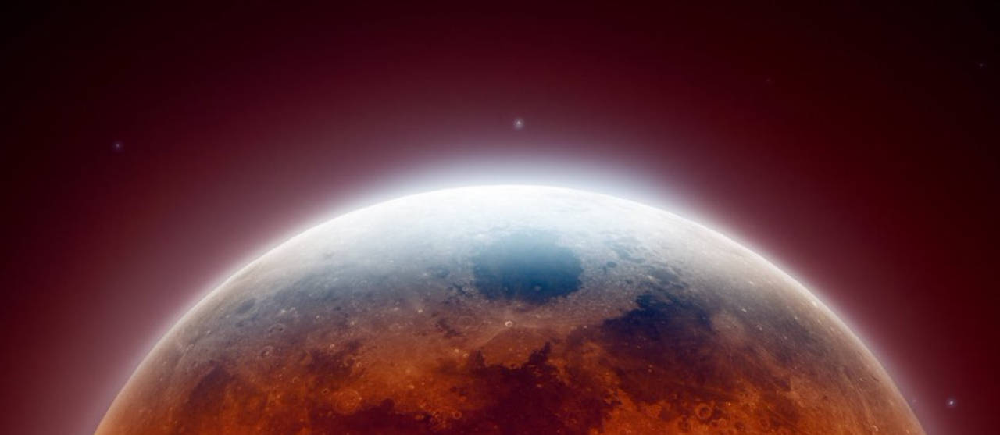

Justin Montagne
Photo Gallery
Image of the lunar eclipse on November 8, 2022

This was an image I saw of the November 8th lunar eclipse and it has stuck in my head since then. I am super interested in space and this is one of my favorite pictures of the moon. I love the redness of the moon and the red and white glow around the sides of the moon. My favorite part of this image is the light shining on the top of the moon from the Sun slightly peaking over the Earth to provide just enough light to see the moon like this.